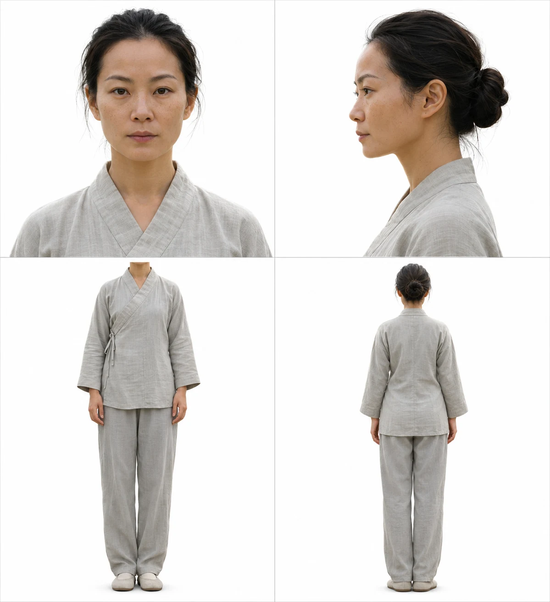

茶叶
剧本与分镜
剧本
下载原文# 《茶叶》叙事剧本 画面改编初稿，旁白与原声待听校。 **外景 · 山间茶田与溪流 · 清晨** 山谷浮着薄雾，嫩叶落入溪水，一圈涟漪扩开。灰衣女子坐在溪石上，举起白瓷杯轻抿。她沿茶垄走过，伸手轻触茶梢。 **内景 · 制茶屋** 双手将茶叶撒入铁锅。热气从木案升起，她俯身整理茶叶。镜头从案上散茶移向盛有茶汤的陶盘，茶罐倒影随水纹晃动。 **外景 · 庭院与山水** 茶礼盒、圆罐和茶杯陈列在白墙庭院。荷花、秋叶与白雪先后改变庭景。画面回到茶田与溪石，礼盒置在水边。女子背着斗笠乘木舟沿山间水道前行。晨光穿过竹林，她在竹间举起茶罐。回到白墙庭院，她坐在水景旁，自礼盒前举杯品茶。最后，圆罐立在茶树间，画面失焦收尾。
脚本
下载原文# 《茶叶》分镜脚本 时间依参考帧定位，精确剪接点与原声待核对。 | 时间（约） | 画面与剪辑 | 资产 | |---|---|---| | 00:00–00:06 | 山雾、溪水跌落石阶，切浮叶涟漪 | 茶山溪谷、嫩茶叶 | | 00:06–00:14 | 女子坐于溪石举杯；侧脸、手持杯与蒸汽特写 | 制茶女子、白瓷杯 | | 00:14–00:18 | 女子走过茶垄，切手指触及嫩芽 | 制茶女子、茶田 | | 00:18–00:26 | 撒茶入锅，切木案与手工理茶 | 制茶屋、铁锅、竹筛、散茶 | | 00:26–00:32 | 茶汤涟漪与圆罐倒影，桌面静物 | 陶盘、圆罐 | | 00:32–00:38 | 庭院陈列切换荷花、秋叶和雪景 | 礼盒、茶罐、杯碟、庭院季节场景 | | 00:38–00:46 | 嫩叶越过茶垄，礼盒落在溪边湿石的产品镜头 | 嫩茶叶、茶田、礼盒、溪谷 | | 00:46–00:52 | 从后方跟拍木舟，女子携斗笠立在船中 | 木舟、斗笠、山间水道 | | 00:52–00:56 | 俯视晨雾竹林，切女子双手举罐 | 竹林、茶罐 | | 00:56–01:02 | 女子坐在庭院水景旁饮茶，礼盒同框 | 水景庭院、礼盒、杯碟 | | 01:02–片尾 | 茶罐置于茶树间，定格后失焦 | 圆形茶罐、茶田 |
制作资产
角色资产 · 1 项
